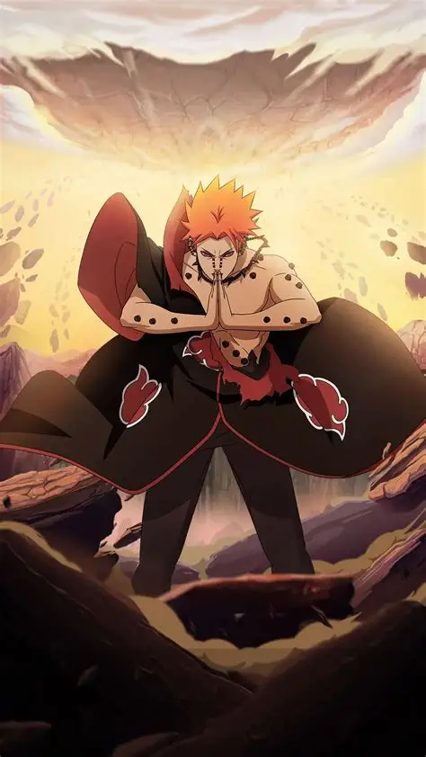

佩恩・天道，本体为弥彦，是晓组织创始人之一，佩恩六道的核心主体，拥有轮回眼之力，是忍界公认的顶级强者。
一、苦难童年（乱世孤儿）
弥彦自幼生活在常年战乱的雨隐村，父母死于忍界大战，从小孤身流浪。
常年饱受战争、饥饿、欺凌，亲眼见证乱世的残酷，内心极度渴望和平。
性格乐观、善良坚毅，从不怨天尤人，立志靠自己的力量终结战争。
二、拜师修行（追寻和平）
偶遇流浪的自来也，与长门、小南一同拜师，学习正统忍术。
修行刻苦、天赋出众，擅长水遁与体术，领导力极强。
三人结伴创立早期晓组织，初衷是团结忍者、以力量和交涉换取和平。
三、人生悲剧（信念崩塌）
雨隐村半藏忌惮晓组织的影响力，设下阴谋圈套。
以小南性命要挟，逼迫弥彦自裁换取同伴安全。
弥彦为守护同伴、坚守道义，毅然自尽，一生和平梦想彻底破碎。
挚友离世让长门彻底黑化，彻底否定温柔的和平方式。
四、天道诞生（神之降临）
长门利用轮回眼，将弥彦遗体改造为天道佩恩，成为六道之首。
继承弥彦容貌，拥有操控引力、斥力的顶级血继能力。
掌握神罗天征、万象天引、地爆天星三大神术，攻防压制绝大多数忍术。
以 “让世界感受痛苦” 为理念，想用恐惧震慑世人，强行终止战争。
五、威震忍界（木叶浩劫）
统领晓组织抓捕尾兽，搅动整个忍界格局。
发动超・神罗天征，瞬间摧毁整个木叶村落，造成大量伤亡。
战力压制五代火影、众多上忍，展现出六道级的恐怖实力。
六、人物信条
“不经历痛苦的人，永远无法理解真正的和平。”